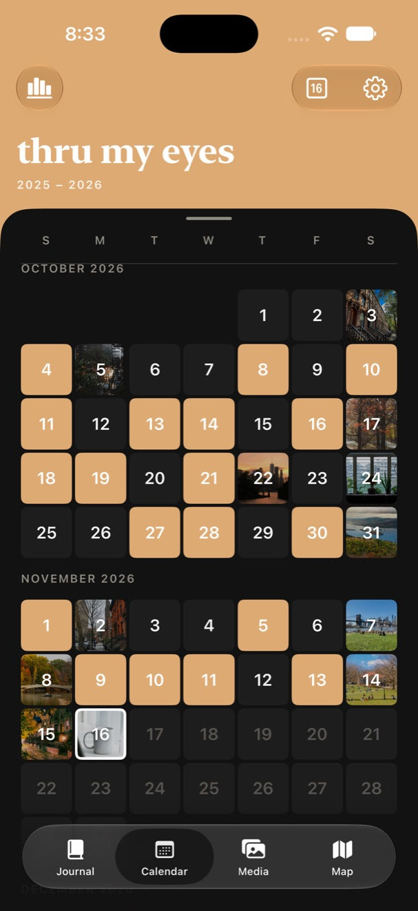
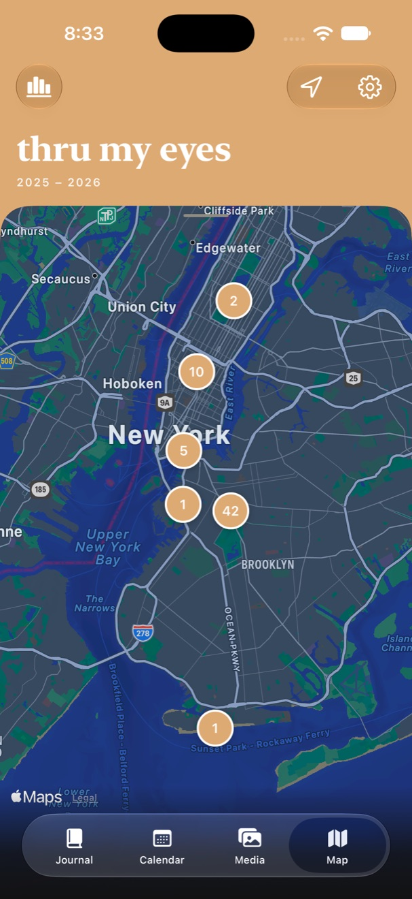

Just write.
A clean editor with simple formatting and photos. Each entry keeps its date, place and weather.
The whole day, in one place.
The photos you took, your calendar events and the places you spent time, beside what you wrote.
Calendar.
Every day you wrote, month by month. Open any one of them.
Media.
Every photo and video, each a way back to its entry.
Never forget a place you've visited.
Your entries on a map, gathered where you wrote them.
Keep the habit.
Your streak, words written and places visited. A daily reminder, On This Day and widgets bring you back.


